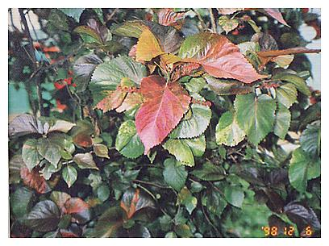
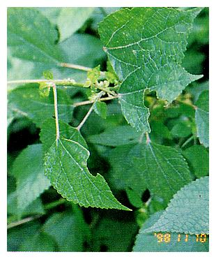
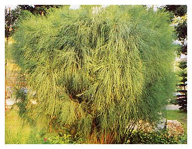
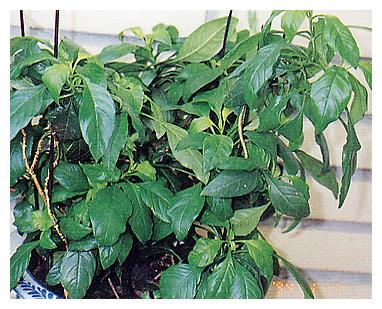
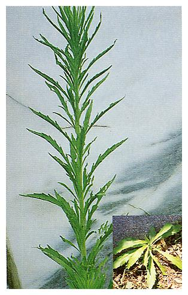
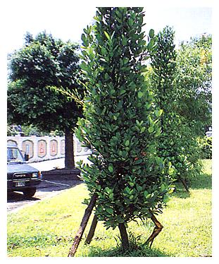
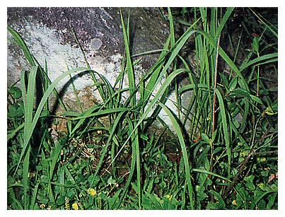
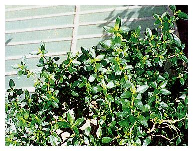
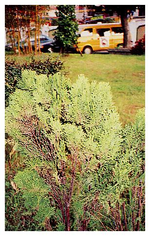

| 編號 | 照片 | 名稱 |
| 01 |  | 紅葉鐵莧、紅桑 |
| Acalypha wilkesianaMuell.-Arg. | ||
| 大戟科 Euphorbiaceae | ||
| 介紹 | 多年生灌木，葉互生，葉片有各種色彩變化，寬卵形，先端尖，葉基心形，鋸齒緣，形若桑葉，因葉常紅色，故名「紅桑」。性喜陽光也耐乾旱，雌雄同株，雄花序穗狀紅褐色，長15～25公分，小花多數簇生其上，雌花序穗狀，紅褐色，每花具一紅褐色心形苞片，子房三室，花柱紅色鬚狀，繁殖可用分株法或阡插。 | |
| 編號 | 照片 | 名稱 |
| 02 |  |
黑板樹 |
| Alotonia scholaris (L.)R.Br. | ||
| 夾竹桃科 Apocynaceae | ||
| 介紹 | 常綠喬木，枝輪生，具乳汁。葉6～10枚輪生，革質倒卵形，側脈平行。聚繖花序，花黃白色，莢果褐色，細圓柱形，叢生下垂，種子細長。樹幹挺直樹勢強健，耐風、抗污染。黑板樹是台中市之市樹。 | |
| 編號 | 照片 | 名稱 |
| 03 |  |
肯氏南洋杉 |
| Araucaria cunninghamii Sweet | ||
| 南洋杉科 Araucariaceae | ||
| 介紹 | 常綠大喬木，樹皮常片狀剝落，側枝輪生，小枝由側枝向兩側生長，葉鑿形或三稜形，硬而尖銳會刺人，螺旋狀排列於小枝上，毬果寬卵形，種子藏於果鱗內，每一鱗片內含一種子。繁殖多用種子繁殖，如以側枝、插條繁殖之苗不能直立，除供觀賞外，樹幹可做建材。 | |
| 編號 | 照片 | 名稱 |
| 04 |  |
黃金竹、金絲竹 |
| Bambusa vulgarisSchrad Ex. Wendl.var.Striata Gamble | ||
| 禾本科 Gramineae | ||
| 介紹 | 多年生，莖中空有節，莖高可達十餘公尺，金黃色有深綠色縱紋，寬窄不一，有時呈線狀，葉長橢圓狀針形，長15～20cm，寬5～7cm，先端漸尖呈短尾狀，基部鈍或圓鈍。葉脈平行脈，葉柄短，竹子數十年才開花，開完花竹子就漸枯萎，花兩性，果為穎果。 | |
| 編號 | 照片 | 名稱 |
| 05 |  | 苧麻、裏白苧麻、真麻 |
| Boehmeria nivea (L.) Gaud | ||
| 蕁麻科 Urticaceae | ||
| 介紹 | 常綠性亞灌木，高一至二公尺，多分枝，小枝灰褐色，有一些毛茸。葉互生具托葉，有柄，葉身廣卵形或心臟形，先端銳至銳尖，基部心形至楔形，厚質，葉緣有鈍鋸齒，上表面翠綠光滑，下表面密生白毛，主脈三條，葉柄長三至八公分，托葉披針形。雌雄同株，單性花，小花數簇成球狀，排成圓錐花序，腋出，瘦果扁卵狀，被有細毛。 苧麻之莖富含纖維，可製繩索或織麻布是人造纖維工業未發達前的重要麻布原料，嫩莖葉及根部可做蔬菜。 全草具有涼血安胎，清熱利尿，消炎解毒的功效。根主治肺炎、肝炎、腎炎、感冒發熱、痲疹高燒、哮喘、糖尿病、淋病、胎動不安。根外用治跌打損傷、骨折、腫毒瘡瘍。葉治肺炎、肝炎，外用治刀傷出血、虫蛇咬傷。 | |
| 編號 | 照片 | 名稱 |
| 06 |  |
九重葛、三角花、三角梅、南美紫茉莉 |
| Bougainvillea spp. | ||
| 紫茉莉科Nyctaginaceae | ||
| 介紹 | 常綠蔓性灌木，葉互生，葉腋長有刺，枝葉生長茂密，葉全緣，心臟形或三角形，花小形而不顯著，筒狀5～6裂，雄蕊7～8枚，子房有柄，花外有大形顯著之花瓣狀苞片，一般誤以為花，苞片之顏色有紅、紫、白、黃、粉紅等，苞片有單瓣、重瓣之品種，花期多在冬春季。九重葛為屏東縣之縣樹，繁殖法，重瓣品種用高壓，單瓣品種用插枝，於春季施行育苗工作。 | |
| 編號 | 照片 | 名稱 |
| 07 |  |
黃槐 |
| Cassia surattensis Burm.f. | ||
| 蘇木科 Caesalpiniaceae | ||
| 介紹 | 落葉小喬木，葉互生，偶數羽狀複葉，小葉對生，橢圓形長約3公分，最下端的一、二對葉在總柄處有腺狀凸出物。花腋生，總狀繖房花序，花黃色，徑約3～4公分，花瓣5片，卵形，雄蕊10枚其中三枚無花蕊，莢果扁平。花黃色鮮艷，花期長自三月～十一月均開花，尤其在夏天暑熱中見到滿樹黃花，心情更是清爽。黃槐的小葉會進行睡眠運動，幾乎整年均開花，甚為奇特，黃槐之葉可做瀉藥，木材能夠造紙，繁殖以播種繁殖，黃槐宜栽植在風勢較小之處，因其根系不甚發達而且莖較脆弱。 | |
| 編號 | 照片 | 名稱 |
| 08 |  | 叢生木麻黃、千頭木麻黃 |
| Casuarina equisetifolia L. | ||
| 木麻黃科 Casuarinaceae | ||
| 介紹 | 常綠小喬木，株高約1～2公尺，葉退化成小枝狀，輪生，具6～8稜角，各葉有6～8鞘齒，春季4～5月開花，雄花灰褐色，雌花紅色，瘦果橢圓形，耐旱、耐鹽、抗風。 | |
| 編號 | 照片 | 名稱 |
| 09 |  |
變葉木 |
| Codiaeum variegatum(L.) Juss | ||
| 大戟科 Euphorbiaceae | ||
| 介紹 | 常綠灌木，葉為單葉互生。總狀花序，腋生，花小型，單性雌雄同株，雄蕊20～30枚，有長花梗，雌花無瓣幾無梗，子房3室，蒴果球形或略扁。 原產東印度，南洋群島及澳洲，變葉木之葉形及色彩變異極大，形狀常見有橢圓形，披針形，心形或有缺刻，顏色常見者有：綠、黃紅及雜色等，莖、葉之汁液有毒，誤食之會有腹痛、腹瀉等症狀，可做瀉劑或發汗劑。利用嫩枝阡插繁殖，半個月便會發根。 | |
| 編號 | 照片 | 名稱 |
| 10 |  | 鳥尾花 |
| Crossandra infundbuliformis(L.) Nees | ||
| 爵床科 Acanthaceae | ||
| 介紹 | 常綠亞灌木，葉狹卵形至披針形。花序為穗狀，花不整齊，花萼5裂；花冠基部管狀 ，上部5裂，橙紅色，雄蕊4枚呈兩體小蕊，著生於花冠上，果為蒴果，花期長，春季至秋季均開花，繁殖以種子或阡插法。 | |
| 編號 | 照片 | 名稱 |
| 11 |  |
狗肝草、六角英、狗肝菜、華九頭獅子草、青蛇仔 |
| Diclipiera chinensis Juss. | ||
| 爵床科 Acanthaceae | ||
| 介紹 | 多年生草本，全珠被短毛，葉對生、橢圓形、兩端銳尖，葉緣為全緣或波狀緣，有葉柄。四季開花，花腋生或頂生，小花2～3朵，粉紅色唇形，外有兩片大小苞葉，果實為蒴果，棒狀。莖方形多分枝節處易生根，形成叢生狀。 枝葉有解熱消炎功效，主治肺炎、喉痛、吐瀉、跌打損傷、急性肝炎、風濕性關節炎等。治急性肝炎時以狗肝草及茵陳莖葉（乾品）各一兩以水煎服。 | |
| 編號 | 照片 | 名稱 |
| 12 |  | 加大拿蓬、小燕草 |
| Erigeron canadensis Linn. | ||
| 菊科 Compositae | ||
| 介紹 | 一年生草本，全株被有剛毛或硬毛，莖直立，分枝，高可達150cm，花序具有小葉。根生葉簇生，篦狀披針形，邊緣為粗鋸齒緣。莖生葉互生，無柄，長披針形或線形，邊緣為全緣或微有鋸齒，頭狀花細小，圓錐花序，淡綠色，總苞鐘形，裂片線形或狹披針狀線形，先端銳尖，無毛或散生短硬毛，舌狀花多數，白色，較管狀花稍超出，果為瘦果。。 | |
| 編號 | 照片 | 名稱 |
| 13 |  |
銀邊海衛矛、銀邊正木 |
| Euonymus japonicus cv.'Argenteo-variegatus' | ||
| 衛矛科 Celastraceae | ||
| 介紹 | 常綠灌木，株高從60公分至二公尺不等，葉對生，革質富光澤，橢圓形，葉緣有細鋸齒，葉色依品種而別，有全綠，金星（中間黃，邊緣綠），銀邊（中間綠邊緣黃）等斑紋變化，枝葉色彩潔淨，優雅，為優良之插花材料。 性喜溫暖，繁殖可用播種阡插或高壓法，春秋為適期。 | |
| 編號 | 照片 | 名稱 |
| 14 |  |
鳥榕、赤榕、山榕、雀榕 |
| Ficus wightiana Wall. | ||
| 桑科 Moraceae | ||
| 介紹 | 落葉大喬木，每年落葉2～4次；枝幹上生有多數氣生根，但不會形成支柱根。葉互生，嫩葉暗紫紅色有光澤，長橢圓形，叢生於枝端，全緣或波狀緣，具長柄，葉片及嫩枝初呈赤紅色，具有白色之大形苞片。隱花果，球形，長在枝幹上，成熟之果實淡紅色，散生許多小白點。 雀榕成熟之隱花果及托葉可食。 | |
| 編號 | 照片 | 名稱 |
| 15 |  | 福木、福樹 |
| Garcinia subelliptica Merr. | ||
| 籐黃科 Clusiaceae | ||
| 介紹 | 常綠喬木，高可達6公尺，樹形圓錐形，樹幹直，樹皮厚黑褐色，枝幹間成銳角，小枝方形，粗硬。葉對生，葉片肥厚，卵形或橢圓形，全緣，先端圓凹，顏色深綠，葉面平滑有光澤，有柄。雌雄異株，穗狀花序，花萼花瓣各4枚，核果扁球形，熟時橘黃色，內有3～4粒種子。 福木耐旱、耐鹽可為防風林，繁殖可用播種，高壓或阡插，木材可供建材用，樹脂可供黃色染料及藥用。 | |
| 編號 | 照片 | 名稱 |
| 16 |  |
扶桑、朱瑾 |
| Hibiscus rosa-sinensis L. | ||
| 錦葵科 Malvaceae | ||
| 介紹 | 常綠灌木，高1～2.5m，幹直立多分枝，葉廣卵形至卵形披針形互生，有粗鋸齒緣，葉稍厚而光滑，葉柄基部有線形托葉，花由新枝條的葉腋單獨開出，花梗長，花萼五裂，披針形，花瓣五片，螺旋狀排列，花蕊突出於花瓣外，雄蕊密生於柱頭下部，柱頭五裂，蒴果卵形，也有花瓣重瓣的品種。 根及根幹皮有解毒、調經通便消炎之效，葉能解毒、消腫、止血。扶桑花是高雄縣之縣花 | |
| 編號 | 照片 | 名稱 |
| 17 |  | 白茅、茅草 |
| Imperata cylindrica (L.)Beauv. | ||
| 禾本科 Gramineae | ||
| 介紹 | 多年生草本，地下莖匍匐生長，橫向延伸，有節，先端尖銳，若打赤腳在田埂上行走，往往就會被白茅之地下莖刺傷腳底。稈纖細向上直立，高約30～60cm。 葉鞘通常有毛，葉片扁平，線形，平行脈，主脈明顯，長20～40公分，寬7～12公分，先端銳尖。圓錐花序呈圓柱狀，密生白花長絹毛，雄蕊黃褐色二枚，春天開花。 白茅全株煮清水，喝了可退熱，治痲疹、高血壓、黃膽肝炎、流鼻血，花晒乾炒黑可用來止血、鎮痛，此外白茅之莖葉可用來造紙，蓋茅草屋，以其蔓延力強，更可以作固沙之用，白茅之生命力極強，地下莖只要有2～3節留在地下，只要有水分很快便會長出莖葉來。 | |
| 編號 | 照片 | 名稱 |
| 18 |  |
馬櫻丹、刺仔花、廣葉美人櫻、龍船花 |
| Lantana camara L. | ||
| 馬鞭草科 Verbenaceae | ||
| 介紹 | 常綠多年生半蔓性灌木，整株植物被有柔毛並具有刺激性的強烈氣味。小枝方形，有刺。單葉，對生，葉卵形，鈍鋸齒緣，葉兩面都有毛，頭狀花序密生成一圓盤狀，頂生或腋生，有梗，苞大，萼小，花冠不規則淺裂，徑7～8mm，花筒細長，四強小蕊，果為核果，球形。全年皆可開花，以夏秋最為盛開，花色有黃、橙黃、紫紅、淡紅等。 馬櫻丹原產熱帶美洲，目前在本省已歸化為本地，蔓生山野被視為雜草雜樹。繁殖以阡插法，剪取不太老的枝條做插穗，插於鬆軟之土中，待發枝再移植。 馬櫻丹除花供觀賞外，根可解熱，活血，治風濕，感冒，葉莖有消腫解毒，袪風止癢，治癰疽，疥瘡，花有清涼解毒止血，治肺癆吐血、頭痛、止瀉、濕疹之效。 | |
| 編號 | 照片 | 名稱 |
| 19 |  |
山櫻花、山櫻桃、緋寒櫻 |
| Prunus campanulata Maxim. | ||
| 薔薇科 Rosaceaee | ||
| 介紹 | 落葉中喬木，樹皮茶褐色具水平向線形皮孔，老樹之樹皮常呈片狀剝落。單葉互生，倒卵形或卵狀橢圓形，紙質，鋸齒緣，托葉線形，葉基有一對紅色腺體，葉柄長約1公分，花在葉長出前先開放，通常在1～3月間開花，山上較寒冷處較早開花，每3～5朵簇生於葉腋，下垂，桃紅色，花梗細長，花萼鐘形，花瓣5片，不完全開放。核果卵形未熟時綠色，成熟時紅色，果小但可食。果實成熟時掉落在樹下，即可就地萌芽產生幼苗，將此幼苗移植即可繁殖。 | |
| 編號 | 照片 | 名稱 |
| 20 |  |
垂柳 |
| Salix babylonica L. | ||
| 楊柳科 Salicaceae | ||
| 介紹 | 落葉喬木，枝條纖細而下垂，以致整株呈下垂狀，故名「垂柳」。 葉線狀披針形，柔荑花序雄蕊2枚，雌蕊子房一，無柄，垂柳之根喜潮濕，通常植於水邊，其根系特別發達故可種在河岸供水土保持之用。垂柳易以阡插繁殖，選成熟而未老化之枝條，在葉落後新芽未萌生前（即冬末春初）阡插容易成活。所謂「無心插柳，柳成蔭」就是形容柳樹容易種植。 | |
| 編號 | 照片 | 名稱 |
| 21 |  | 六月雪、噴雪 |
| Serissa japonica. | ||
| 茜草科 Rubiaceae | ||
| 介紹 | 株高50～100cm，葉細小，對生，橢圓形，全緣。夏季開花，腋出，白色漏斗狀，花瓣5～6，花小數多，盛開時白花點點遍佈全株，如同雪花披被，故名六月雪。枝條纖細，分枝濃密，適合整枝剪型。 栽培種有金邊六月雪，葉緣及中肋葉脈處有乳黃色斑紋。 | |
| 編號 | 照片 | 名稱 |
| 22 |  | 黃金側柏 |
| Thuja orientalis L. | ||
| 柏科 Cupressaceae | ||
| 介紹 | 常綠小喬木，枝條側立樹冠圓錐狀，小枝細小略扁平鱗片狀，葉側出三角狀卵形、對生。雌雄同株，毬花單生枝頂，花期3～4月，果為毬果，果期9～11月種子厚無翅。 黃金側柏性喜涼爽潮濕，日照充足且通風良好的環境，除供觀賞外，枝葉煮清水喝，有利尿止痛作用，但劑量多寡應慎重，宜遵醫囑才使用，否則用量太重，造成肺水腫，循環及呼吸功能衰竭。 | |
| 編號 | 照片 | 名稱 |
| 23 |  |
黃鵪菜、黃瓜菜 |
| Youngia japonica (Linn) DC. | ||
| 菊科 Compositae | ||
| 介紹 | 一年生草本，全株著生疏軟毛，莖幹內有白色乳汁。莖往往在基部或稍為上部分歧，直立葉大部分在根部附近長出，根葉叢生，倒披針形，基部漸細成葉柄狀，羽狀深裂，邊緣為不整齊齒牙緣，頂裂片較大，呈三角形或卵形。頭狀花多數，呈繖房狀圓錐花序著生莖頂。花冠黃色、舌形，總苞長5～6mm，內列總苞片約8枚，瘦果長約1.8mm，上部漸細，有細肋，粗糙，褐色，冠毛白色，長約3mm。 嫩莖葉先用沸水燙過再炒食，味道尚可，全草含蛋白質鞣質，有機酸，醣類等。全草有利尿降血壓，清火疏肝，解毒消腫，及清瘀消水之功效。可治高血壓，眼睛紅腫，咽喉痛，腮腺炎，扁桃腺炎，肝炎，肺炎乾咳或咳血，肝硬化腹水，膀胱炎，尿道炎，白帶。 | |
| 編號 | 照片 | 名稱 |
| 24 |  |
高麗草、韓國草、細葉結縷、高麗芝、朝鮮結縷草 |
| Zoysia tenuifolia willd | ||
| 禾本科 Gramineae | ||
| 介紹 | 匍匐性多年生草本，葉線形或披針形，花呈總狀花序，小穗散卵形呈聚合狀。匍匐莖多偃伏地表或地中延伸，自節間產生直立莖或鬚根。冬天葉子枯萎，翌春再長新葉。 | |